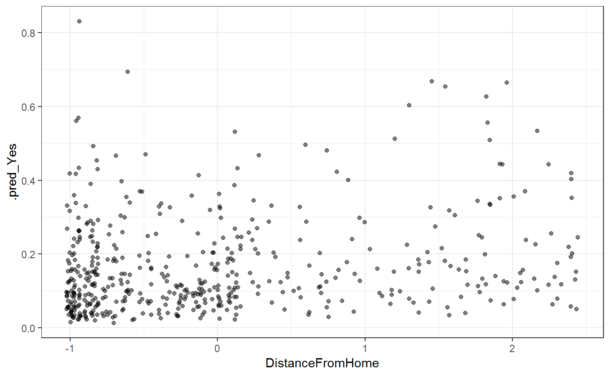

vignettes/bootstrapping.Rmd
bootstrapping.RmdThis vignette walks demonstrates how to estimate uncertainty in predictions via the bootstrap. We use rsample throughout. First we show how to calculate confidence intervals, and then how to calculate predictive intervals. If you are unfamiliar with the difference between these two, we highly recommend that you read vignette("intervals", package = "safepredict").
Throughout this vignette we use the nonparametric bootstrap, which is more robust than the parametric bootstrap and does not require us to assumption that we have a correctly specified model. The parametric bootstrap will give you tighter intervals than the procedures we outline here, but we recommend against this unless you are very, very certain that you have correctly specified your model.
for continuous outcomes. what to do if you only had hard class predictions? multinomial proportions stuff
UGH THINK ABOUT THIS. this is like out of bag confidence intervals
Let \(X\) be the original data (containing both predictors and outcome). Split it into a training set \(X_0\) and a test set \(X'\).
bootstrap out of sample estimate
The OOB estimate, which
algorithm:
library(tidymodels)
#> Warning: package 'tidymodels' was built under R version 3.5.1
#> -- Attaching packages ------ tidymodels 0.0.2 --
#> v broom 0.5.1 v purrr 0.2.5.9000
#> v dials 0.0.2 v recipes 0.1.4
#> v dplyr 0.7.8 v rsample 0.0.3
#> v ggplot2 3.1.0 v tibble 1.4.2
#> v infer 0.4.0 v yardstick 0.0.2
#> v parsnip 0.0.1
#> Warning: package 'broom' was built under R version 3.5.1
#> Warning: package 'scales' was built under R version 3.5.1
#> Warning: package 'dplyr' was built under R version 3.5.1
#> Warning: package 'ggplot2' was built under R version 3.5.1
#> Warning: package 'infer' was built under R version 3.5.1
#> Warning: package 'parsnip' was built under R version 3.5.1
#> Warning: package 'recipes' was built under R version 3.5.1
#> Warning: package 'rsample' was built under R version 3.5.1
#> Warning: package 'tidyr' was built under R version 3.5.1
#> -- Conflicts --------- tidymodels_conflicts() --
#> x purrr::discard() masks scales::discard()
#> x rsample::fill() masks tidyr::fill()
#> x dplyr::filter() masks stats::filter()
#> x dplyr::lag() masks stats::lag()
#> x recipes::step() masks stats::step()
library(safepredict)
set.seed(27)
attrition <- attrition %>%
sample_n(500)
glimpse(attrition)
#> Observations: 500
#> Variables: 31
#> $ Age <int> 32, 51, 33, 31, 31, 50, 50, 33, 27, 5...
#> $ Attrition <fct> No, No, No, Yes, No, No, No, No, No, ...
#> $ BusinessTravel <fct> Travel_Rarely, Travel_Rarely, Travel_...
#> $ DailyRate <int> 234, 684, 867, 1365, 798, 691, 1115, ...
#> $ Department <fct> Sales, Research_Development, Research...
#> $ DistanceFromHome <int> 1, 6, 8, 13, 7, 2, 1, 3, 1, 3, 4, 24,...
#> $ Education <ord> Master, Bachelor, Master, Master, Col...
#> $ EducationField <fct> Medical, Life_Sciences, Life_Sciences...
#> $ EnvironmentSatisfaction <ord> Medium, Low, Very_High, Medium, High,...
#> $ Gender <fct> Male, Male, Male, Male, Female, Male,...
#> $ HourlyRate <int> 68, 51, 90, 46, 48, 64, 73, 56, 60, 4...
#> $ JobInvolvement <ord> Medium, High, Very_High, High, Medium...
#> $ JobLevel <int> 1, 5, 1, 2, 3, 4, 5, 1, 2, 4, 5, 2, 2...
#> $ JobRole <fct> Sales_Representative, Research_Direct...
#> $ JobSatisfaction <ord> Medium, High, Low, Low, High, High, M...
#> $ MaritalStatus <fct> Married, Single, Married, Divorced, M...
#> $ MonthlyIncome <int> 2269, 19537, 3143, 4233, 8943, 17639,...
#> $ MonthlyRate <int> 18024, 6462, 6076, 11512, 14034, 6881...
#> $ NumCompaniesWorked <int> 0, 7, 6, 2, 1, 5, 3, 1, 5, 3, 2, 2, 1...
#> $ OverTime <fct> No, No, No, No, No, No, Yes, Yes, No,...
#> $ PercentSalaryHike <int> 14, 13, 19, 17, 24, 16, 19, 11, 19, 1...
#> $ PerformanceRating <ord> Excellent, Excellent, Excellent, Exce...
#> $ RelationshipSatisfaction <ord> Medium, High, Medium, High, Low, Very...
#> $ StockOptionLevel <int> 1, 0, 1, 0, 1, 0, 0, 0, 1, 3, 1, 0, 0...
#> $ TotalWorkingYears <int> 3, 23, 14, 9, 10, 30, 28, 8, 6, 21, 2...
#> $ TrainingTimesLastYear <int> 2, 5, 1, 2, 2, 3, 1, 3, 1, 5, 2, 3, 2...
#> $ WorkLifeBalance <ord> Better, Better, Better, Bad, Better, ...
#> $ YearsAtCompany <int> 2, 20, 10, 3, 10, 4, 8, 8, 2, 5, 1, 5...
#> $ YearsInCurrentRole <int> 2, 18, 8, 1, 9, 3, 3, 7, 2, 3, 0, 4, ...
#> $ YearsSinceLastPromotion <int> 2, 15, 7, 1, 8, 0, 0, 3, 2, 1, 0, 1, ...
#> $ YearsWithCurrManager <int> 2, 15, 6, 2, 9, 3, 7, 0, 0, 3, 0, 4, ...rec <- recipe(Attrition ~ ., data = attrition) %>%
step_center(all_numeric()) %>%
step_scale(all_numeric()) %>%
step_dummy(all_nominal(), -Attrition) %>%
prep()
rec
#> Data Recipe
#>
#> Inputs:
#>
#> role #variables
#> outcome 1
#> predictor 30
#>
#> Training data contained 500 data points and no missing data.
#>
#> Operations:
#>
#> Centering for Age, DailyRate, ... [trained]
#> Scaling for Age, DailyRate, ... [trained]
#> Dummy variables from BusinessTravel, Department, ... [trained]
x <- juice(rec, all_predictors(), composition = "matrix")
y <- juice(rec, all_outcomes())$Attritionhead(x)
#> Age DailyRate DistanceFromHome HourlyRate JobLevel
#> [1,] -0.5420737 -1.41458471 -0.9753788 0.05591553 -0.9432286
#> [2,] 1.4718882 -0.30067221 -0.3707552 -0.78529154 2.6161245
#> [3,] -0.4360758 0.15231887 -0.1289057 1.14453644 -0.9432286
#> [4,] -0.6480717 1.38504870 0.4757178 -1.03270538 -0.0533903
#> [5,] -0.6480717 -0.01848105 -0.2498305 -0.93373984 0.8364480
#> [6,] 1.3658902 -0.28334468 -0.8544540 -0.14201555 1.7262862
#> MonthlyIncome MonthlyRate NumCompaniesWorked PercentSalaryHike
#> [1,] -0.8884757 0.52289171 -1.0744000 -0.3547390
#> [2,] 2.7297234 -1.06362119 1.6077683 -0.6194697
#> [3,] -0.7053447 -1.11658728 1.2246014 0.9689141
#> [4,] -0.4769548 -0.37067100 -0.3080662 0.4394528
#> [5,] 0.5099410 -0.02460755 -0.6912331 2.2925672
#> [6,] 2.3320316 -1.00612691 0.8414345 0.1747222
#> StockOptionLevel TotalWorkingYears TrainingTimesLastYear
#> [1,] 0.2747570 -1.0678696 -0.6294487
#> [2,] -0.8894674 1.4991246 1.7134125
#> [3,] 0.2747570 0.3439772 -1.4104025
#> [4,] -0.8894674 -0.2977713 -0.6294487
#> [5,] 0.2747570 -0.1694216 -0.6294487
#> [6,] -0.8894674 2.3975726 0.1515050
#> YearsAtCompany YearsInCurrentRole YearsSinceLastPromotion
#> [1,] -0.8198000 -0.6173075 -0.03246998
#> [2,] 2.1433325 4.0241025 4.18862741
#> [3,] 0.4971478 1.1232212 1.59102902
#> [4,] -0.6551815 -0.9073957 -0.35716978
#> [5,] 0.4971478 1.4133094 1.91572882
#> [6,] -0.4905630 -0.3272194 -0.68186958
#> YearsWithCurrManager BusinessTravel_Travel_Frequently
#> [1,] -0.5861984 0
#> [2,] 3.1203092 0
#> [3,] 0.5542655 0
#> [4,] -0.5861984 0
#> [5,] 1.4096134 1
#> [6,] -0.3010825 0
#> BusinessTravel_Travel_Rarely Department_Research_Development
#> [1,] 1 0
#> [2,] 1 1
#> [3,] 1 1
#> [4,] 1 0
#> [5,] 0 1
#> [6,] 1 1
#> Department_Sales Education_1 Education_2 Education_3 Education_4
#> [1,] 1 0.3162278 -0.2672612 -6.324555e-01 -0.4780914
#> [2,] 0 0.0000000 -0.5345225 -4.095972e-16 0.7171372
#> [3,] 0 0.3162278 -0.2672612 -6.324555e-01 -0.4780914
#> [4,] 1 0.3162278 -0.2672612 -6.324555e-01 -0.4780914
#> [5,] 0 -0.3162278 -0.2672612 6.324555e-01 -0.4780914
#> [6,] 0 0.0000000 -0.5345225 -4.095972e-16 0.7171372
#> EducationField_Life_Sciences EducationField_Marketing
#> [1,] 0 0
#> [2,] 1 0
#> [3,] 1 0
#> [4,] 0 0
#> [5,] 1 0
#> [6,] 0 0
#> EducationField_Medical EducationField_Other
#> [1,] 1 0
#> [2,] 0 0
#> [3,] 0 0
#> [4,] 1 0
#> [5,] 0 0
#> [6,] 1 0
#> EducationField_Technical_Degree EnvironmentSatisfaction_1
#> [1,] 0 -0.2236068
#> [2,] 0 -0.6708204
#> [3,] 0 0.6708204
#> [4,] 0 -0.2236068
#> [5,] 0 0.2236068
#> [6,] 0 0.2236068
#> EnvironmentSatisfaction_2 EnvironmentSatisfaction_3 Gender_Male
#> [1,] -0.5 0.6708204 1
#> [2,] 0.5 -0.2236068 1
#> [3,] 0.5 0.2236068 1
#> [4,] -0.5 0.6708204 1
#> [5,] -0.5 -0.6708204 0
#> [6,] -0.5 -0.6708204 1
#> JobInvolvement_1 JobInvolvement_2 JobInvolvement_3
#> [1,] -0.2236068 -0.5 0.6708204
#> [2,] 0.2236068 -0.5 -0.6708204
#> [3,] 0.6708204 0.5 0.2236068
#> [4,] 0.2236068 -0.5 -0.6708204
#> [5,] -0.2236068 -0.5 0.6708204
#> [6,] 0.2236068 -0.5 -0.6708204
#> JobRole_Human_Resources JobRole_Laboratory_Technician JobRole_Manager
#> [1,] 0 0 0
#> [2,] 0 0 0
#> [3,] 0 0 0
#> [4,] 0 0 0
#> [5,] 0 0 0
#> [6,] 0 0 0
#> JobRole_Manufacturing_Director JobRole_Research_Director
#> [1,] 0 0
#> [2,] 0 1
#> [3,] 0 0
#> [4,] 0 0
#> [5,] 1 0
#> [6,] 0 1
#> JobRole_Research_Scientist JobRole_Sales_Executive
#> [1,] 0 0
#> [2,] 0 0
#> [3,] 1 0
#> [4,] 0 1
#> [5,] 0 0
#> [6,] 0 0
#> JobRole_Sales_Representative JobSatisfaction_1 JobSatisfaction_2
#> [1,] 1 -0.2236068 -0.5
#> [2,] 0 0.2236068 -0.5
#> [3,] 0 -0.6708204 0.5
#> [4,] 0 -0.6708204 0.5
#> [5,] 0 0.2236068 -0.5
#> [6,] 0 0.2236068 -0.5
#> JobSatisfaction_3 MaritalStatus_Married MaritalStatus_Single
#> [1,] 0.6708204 1 0
#> [2,] -0.6708204 0 1
#> [3,] -0.2236068 1 0
#> [4,] -0.2236068 0 0
#> [5,] -0.6708204 1 0
#> [6,] -0.6708204 1 0
#> OverTime_Yes PerformanceRating_1 PerformanceRating_2
#> [1,] 0 0.2236068 -0.5
#> [2,] 0 0.2236068 -0.5
#> [3,] 0 0.2236068 -0.5
#> [4,] 0 0.2236068 -0.5
#> [5,] 0 0.6708204 0.5
#> [6,] 0 0.2236068 -0.5
#> PerformanceRating_3 RelationshipSatisfaction_1
#> [1,] -0.6708204 -0.2236068
#> [2,] -0.6708204 0.2236068
#> [3,] -0.6708204 -0.2236068
#> [4,] -0.6708204 0.2236068
#> [5,] 0.2236068 -0.6708204
#> [6,] -0.6708204 0.6708204
#> RelationshipSatisfaction_2 RelationshipSatisfaction_3
#> [1,] -0.5 0.6708204
#> [2,] -0.5 -0.6708204
#> [3,] -0.5 0.6708204
#> [4,] -0.5 -0.6708204
#> [5,] 0.5 -0.2236068
#> [6,] 0.5 0.2236068
#> WorkLifeBalance_1 WorkLifeBalance_2 WorkLifeBalance_3
#> [1,] 0.2236068 -0.5 -0.6708204
#> [2,] 0.2236068 -0.5 -0.6708204
#> [3,] 0.2236068 -0.5 -0.6708204
#> [4,] -0.6708204 0.5 -0.2236068
#> [5,] 0.2236068 -0.5 -0.6708204
#> [6,] 0.2236068 -0.5 -0.6708204library(glmnet)
#> Loading required package: Matrix
#>
#> Attaching package: 'Matrix'
#> The following object is masked from 'package:tidyr':
#>
#> expand
#> Loading required package: foreach
#>
#> Attaching package: 'foreach'
#> The following objects are masked from 'package:purrr':
#>
#> accumulate, when
#> Loaded glmnet 2.0-16
fit <- cv.glmnet(x, y, family = "binomial")
pred <- safe_predict(fit, x, type = "prob")quick viz
x %>%
as_tibble() %>%
bind_cols(pred) %>%
ggplot(aes(DistanceFromHome, .pred_Yes)) +
geom_jitter(alpha = 0.5) +
theme_bw()
boots <- bootstraps(attrition, times = 10, strata = "Attrition")
fits <- boots %>%
mutate(
prepped = map(splits, prepper, rec),
x_train = map(prepped, ~juice(.x, all_predictors(), composition = "matrix")),
y_train = map(prepped, ~juice(.x, all_outcomes())$Attrition),
model = map2(x_train, y_train, cv.glmnet, family = "binomial")
)
boot_preds <- fits %>%
mutate(
preds = map(model, safe_predict, x, type = "prob"),
preds = map(preds, add_id_column)
) %>%
unnest(preds, .id = "model")90 percent confidence interval
pred_ci <- boot_preds %>%
group_by(.id) %>%
summarize(
.pred_Yes_lower = quantile(.pred_Yes, 0.05),
.pred_Yes_upper = quantile(.pred_Yes, 0.95)
)and if we want to bind those to our original predictions we would o
pred_ci %>%
bind_cols(pred) %>%
select(-.pred_No)
#> # A tibble: 500 x 4
#> .id .pred_Yes_lower .pred_Yes_upper .pred_Yes
#> <int> <dbl> <dbl> <dbl>
#> 1 1 0.158 0.160 0.160
#> 2 2 0.0260 0.0549 0.0261
#> 3 3 0.0357 0.0609 0.0359
#> 4 4 0.121 0.150 0.149
#> 5 5 0.0585 0.0812 0.0587
#> 6 6 0.0335 0.0858 0.0334
#> 7 7 0.232 0.244 0.242
#> 8 8 0.134 0.179 0.134
#> 9 9 0.170 0.263 0.262
#> 10 10 0.111 0.191 0.111
#> # ... with 490 more rowsLet \(X\) be the original data (containing both predictors and outcome). Split it into a training set \(X_0\) and a test set \(X'\).
TODO: totally made up the new steps, need to sanity check everything here
NEW STEP: calculate residuals \(\varepsilon\). (how to do this for class probabilities?)
Look at the appropriate quantiles of \(f(X')\). You’re done!